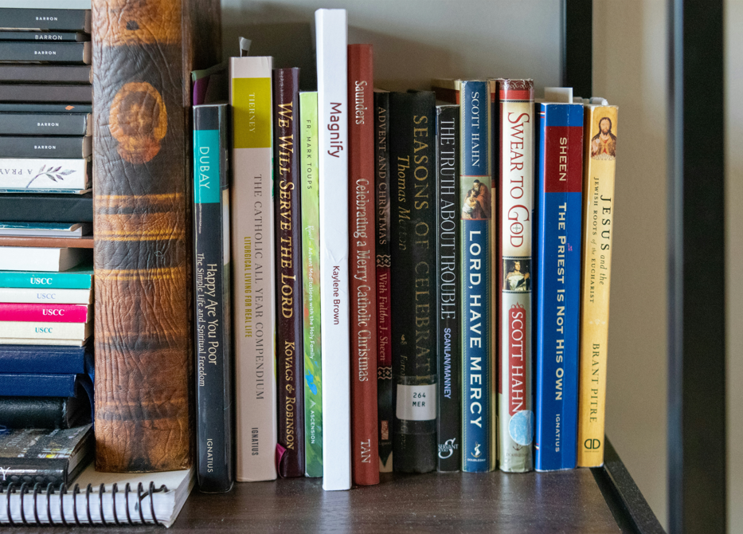

⏰ CET 2025 के लिए समय प्रबंधन टिप्स
विशेषज्ञ समय प्रबंधन रणनीतियों के साथ अपनी तैयारी में महारत हासिल करें और एक प्रभावी अध्ययन कार्यक्रम बनाएं
📝 परिचय
CET की सफलता के लिए प्रभावी समय प्रबंधन अत्यंत महत्वपूर्ण है। यह व्यापक मार्गदर्शिका आपको CET 2025 के लिए एक संतुलित अध्ययन कार्यक्रम बनाने, विषयों को प्राथमिकता देने और अपनी तैयारी की दक्षता को अधिकतम करने में मदद करेगी।
🎯 प्रमुख समय प्रबंधन रणनीतियां

एक यथार्थवादी अध्ययन कार्यक्रम बनाएं
- विषय कठिनाई के आधार पर समय आवंटित करें
- नियमित ब्रेक और संशोधन समय शामिल करें
- प्राप्त करने योग्य दैनिक और साप्ताहिक लक्ष्य निर्धारित करें
अपने विषयों को प्राथमिकता दें
- पहले कमजोर क्षेत्रों पर ध्यान केंद्रित करें
- सभी विषयों के बीच संतुलन बनाएं
- प्रगति का नियमित मूल्यांकन करें
📅 दैनिक अध्ययन कार्यक्रम टेम्पलेट
सुबह का कार्यक्रम (सुबह 6 बजे - दोपहर 12 बजे)
- सुबह 6:00 - 7:00: सुबह की दिनचर्या और नाश्ता
- सुबह 7:00 - 9:00: कठिन विषय (जब मन ताज़ा हो)
- सुबह 9:00 - 9:15: छोटा ब्रेक
- सुबह 9:15 - 11:15: अभ्यास और पुनरीक्षण
- सुबह 11:15 - दोपहर 12:00: मॉक टेस्ट या पिछले वर्ष के पेपर
दोपहर का कार्यक्रम (दोपहर 2 बजे - शाम 6 बजे)
- दोपहर 2:00 - 4:00: सिद्धांत और अवधारणा सीखना
- शाम 4:00 - 4:15: ब्रेक
- शाम 4:15 - 6:00: अभ्यास प्रश्न और संदेह समाधान
💡 उत्पादकता टिप्स
फोकस बनाए रखें
पोमोडोरो तकनीक का उपयोग करें: 25 मिनट का केंद्रित अध्ययन और उसके बाद 5 मिनट का ब्रेक।

प्रभावी नोट्स बनाना
त्वरित पुनरीक्षण और बेहतर याददाश्त के लिए संक्षिप्त, व्यवस्थित नोट्स बनाएं।

नियमित मूल्यांकन
प्रगति की निगरानी और सुधार के क्षेत्रों की पहचान के लिए साप्ताहिक मॉक टेस्ट लें।
⚠️ समय प्रबंधन की सामान्य गलतियां जिनसे बचना चाहिए
- टालमटोल और अंतिम मिनट की तैयारी
- एक दिन में बहुत अधिक विषयों से ओवरलोडिंग
- ब्रेक और आराम के समय की उपेक्षा करना
- नियमित रूप से शेड्यूल की समीक्षा और समायोजन न करना
✅ निष्कर्ष
प्रभावी समय प्रबंधन CET की सफलता की कुंजी है। इन टिप्स का पालन करें, अपना व्यक्तिगत शेड्यूल बनाएं, और अपनी तैयारी के साथ लगातार रहें। याद रखें, अध्ययन समय की मात्रा से अधिक महत्व गुणवत्ता का है।
📚 संबंधित संसाधन

CET कैसे क्रैक करें
विशेषज्ञ टिप्स के साथ पूर्ण तैयारी गाइड
अध्ययन संसाधन
CET के लिए सर्वश्रेष्ठ पुस्तकें और ऑनलाइन संसाधन
मॉक टेस्ट
हमारी मॉक टेस्ट सीरीज के साथ अभ्यास करें
📊 विषय-वार समय आवंटन
अनुशंसित समय वितरण
सामान्य ज्ञान (25%)
- समसामयिक मामले: प्रतिदिन 2 घंटे
- स्थिर सामान्य ज्ञान: प्रतिदिन 1.5 घंटे
- साप्ताहिक पुनरीक्षण: 3 घंटे
तर्क शक्ति (30%)
- तार्किक तर्क: प्रतिदिन 2.5 घंटे
- अभ्यास प्रश्न: प्रतिदिन 2 घंटे
- मॉक टेस्ट: साप्ताहिक 2 घंटे
मात्रात्मक योग्यता (25%)
- बुनियादी अवधारणाएं: प्रतिदिन 2 घंटे
- समस्या समाधान: प्रतिदिन 2 घंटे
- गति गणित: प्रतिदिन 1 घंटा
अंग्रेजी भाषा (20%)
- व्याकरण अभ्यास: प्रतिदिन 1.5 घंटे
- शब्दावली निर्माण: प्रतिदिन 1 घंटा
- अवबोध: प्रतिदिन 1 घंटा
🎯 उन्नत समय प्रबंधन तकनीकें
80/20 नियम (परेटो सिद्धांत)
उन 20% विषयों पर ध्यान केंद्रित करें जो आपको 80% परिणाम देंगे। प्रत्येक विषय में उच्च-उपज वाले क्षेत्रों की पहचान करें और उन्हें प्राथमिकता दें।
- पिछले वर्ष के पेपरों का विश्लेषण करें
- अक्सर पूछे जाने वाले विषयों की पहचान करें
- स्कोरिंग पैटर्न पर ध्यान दें

आइजनहावर मैट्रिक्स
अपने अध्ययन समय को बेहतर ढंग से प्रबंधित करने के लिए तात्कालिकता और महत्व के आधार पर अपने कार्यों को चार क्वाड्रेंट में वर्गीकृत करें।
- तात्कालिक और महत्वपूर्ण: पहले करें
- महत्वपूर्ण लेकिन तात्कालिक नहीं: शेड्यूल करें
- तात्कालिक लेकिन महत्वपूर्ण नहीं: डेलिगेट करें
- न तो तात्कालिक और न ही महत्वपूर्ण: हटा दें
📈 सफलता की कहानियां और टिप्स
राहुल की सफलता की कहानी
"मैंने एक सख्त 6 महीने की शेड्यूल का पालन किया, प्रतिदिन 8 घंटे अध्ययन को समर्पित किया। मुख्य बात निरंतरता बनाए रखना और नियमित ब्रेक लेना था। मैंने CET 2024 में 95% स्कोर किया।"
प्रिया की रणनीति
"मैंने अपने दिन को 30 मिनट के ब्रेक के साथ तीन अध्ययन ब्लॉक में विभाजित किया। इससे मुझे फोकस बनाए रखने और थकान से बचने में मदद मिली। नियमित मॉक टेस्ट से मुझे कमजोर क्षेत्रों की पहचान करने में मदद मिली।"
🔄 साप्ताहिक समीक्षा और समायोजन
रविवार समीक्षा चेकलिस्ट
- साप्ताहिक लक्ष्यों और उपलब्धियों की समीक्षा करें
- मॉक टेस्ट प्रदर्शन का विश्लेषण करें
- अधिक फोकस की आवश्यकता वाले क्षेत्रों की पहचान करें
- अगले सप्ताह का शेड्यूल समायोजित करें
- साप्ताहिक पुनरीक्षण सत्र की योजना बनाएं
🎯 लक्ष्य निर्धारण और ट्रैकिंग
दैनिक लक्ष्य
- 50 अभ्यास प्रश्न पूरे करें
- एक पिछले विषय का पुनरीक्षण करें
- 10 नए शब्दावली शब्द सीखें
साप्ताहिक लक्ष्य
- एक पूर्ण मॉक टेस्ट पूरा करें
- 2-3 नए विषय कवर करें
- सभी साप्ताहिक सामग्री का पुनरीक्षण करें
मासिक लक्ष्य
- 4 पूर्ण मॉक टेस्ट पूरे करें
- 10-12 नए विषय कवर करें
- कमजोर क्षेत्रों में सुधार करें
📱 समय प्रबंधन के लिए डिजिटल टूल्स
अनुशंसित ऐप्स
- Forest: फोकस बनाए रखें और विचलनों से बचें
- Todoist: कार्य प्रबंधन और शेड्यूलिंग
- Anki: फ्लैशकार्ड-आधारित सीखना
- Google Calendar: शेड्यूल प्रबंधन
ऑनलाइन संसाधन
- YouTube अध्ययन चैनल
- ऑनलाइन मॉक टेस्ट प्लेटफॉर्म
- डिजिटल अध्ययन सामग्री
- ऑनलाइन संदेह-समाधान फोरम